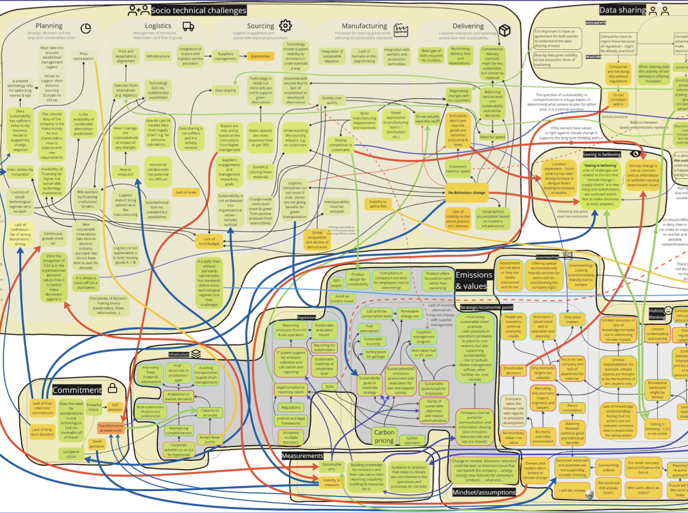

Service & Systemic Design · 2024
Socio-technical Challenges
Within supply-chain management — transition design for CO₂ reduction
Brief. Structural change is needed to replace current mindsets, practices, technologies and services with greener ones — adapting to new landscape requirements set by planetary boundaries.
Context. CO₂ reduction in supply-chain management.
Workshop question. What is your knowledge and experience with social connections and technology within a supply-chain management context?

Section 01 · Methodology
Transition Design — three interconnected phases.
The Transition Design framework was applied as the core methodology, with three interconnected phases applied to the complex challenge of sustainable supply-chain management.
Key phases: Re-framing the present and monitoring progress → Adapting strategies → Reflecting and learning → waiting and observing → prototyping solutions → stakeholder engagement → iterative refinement.
Phase 01 — re-framing
Phase 02 — adapting
Phase 03 — reflecting
Section 02 · Analysis
Geels' Multi-Level Perspective — macro, meso, micro.
To analyse the data we used the Geels Multi-Level Perspective model as a framework for understanding the transition to a sustainable supply chain.
Sustainability transitions can be read through three interconnected levels: the socio-technical landscape, the socio-technical regime and niche innovations — macro, meso and micro.
Multi-Level Perspective — three layers diagram
Upload `img/Socio-technical_e.png`
Section 03 · Findings
Causes & challenges of the transition.
Balancing service and sustainability. Maintaining service levels while meeting sustainability objectives — without trading one off for the other.
Multi-stakeholder impact. Managing diverse and often conflicting impacts across the chain.
Data-sharing resistance. Overcoming active resistance to sharing critical data, especially in logistics.
Value of sustainability. Determining whether sustainability holds sufficient value in the business model to support the required changes.
Challenges map — synthesis
Upload `img/Socio-technical_f.png`